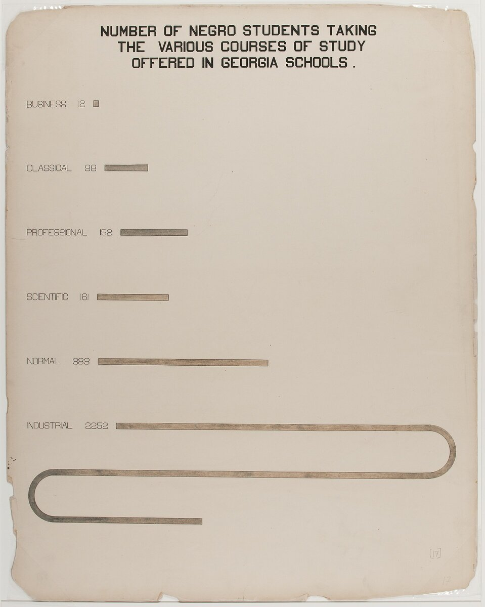

C2 · American History
The Text
Play the audio and follow along, then read it again on your own. Hover over a highlighted word to see what it means.
Listen & Read
Reconstruction: A Revolution That Did Not Last
For fifty years it was taught as a disaster inflicted on the defeated South. The question is not only what happened, but what it cost that the history was written that way.
The word usually attached to Reconstruction is failure, and the word does a particular kind of work. Failure is intransitive. It suggests something that collapsed under its own weight, a well-meant experiment that proved unworkable. Almost everything we now know about the period indicates that it did not fail in that sense. It was defeated, which is a sentence that requires an agent.
Consider first what there was to defeat. Within a decade of the war, some two thousand Black men held public office in the South, from constable to United States senator. Black and white Republicans wrote state constitutions that established public schools where none had existed for anyone. Literacy among the formerly enslaved rose faster in those years than in any comparable period. Black churches, schools and newspapers were founded in numbers that make the period one of the most remarkable episodes of institution-building in American history. This was not a programme imposed on a passive population; it was substantially built by the people it concerned.
The defeat was neither mysterious nor gradual at first. It was conducted by organised armed violence, directed with precision at voters, officeholders and teachers. At Colfax, Louisiana, in 1873, a Black militia defending a courthouse was overwhelmed and most of those who surrendered were killed. When the federal government prosecuted under the Enforcement Acts, the Supreme Court held in 1876 that the Fourteenth Amendment restrained states rather than individuals, and that the prosecutions therefore could not stand. The judgment did not require anybody to approve of the massacre. It simply removed the instrument by which the federal government could answer it.
The political settlement followed the legal one. The disputed election of 1876 was resolved by an arrangement that put a Republican in the White House and withdrew the remaining federal troops from the South, and the apparatus of disfranchisement — poll taxes, literacy tests administered at the registrar's discretion, grandfather clauses — was assembled over the following twenty-five years with results that can be read off the registration rolls. In Louisiana, Black registered voters fell from about 130,000 in 1896 to roughly 1,300 eight years later. That is not a society losing interest in voting.
Now the second half of the subject, which is the history of the history. From roughly 1900, the dominant academic account was produced by William Dunning and his students at Columbia, and it told the story as a tragedy of misrule: ignorant freedmen, corrupt northern adventurers, a prostrate white South eventually redeemed. This account was not confined to seminar rooms. It supplied the plot of the most commercially successful film of the silent era, it furnished the textbooks of several generations, and it provided the respectable language in which disfranchisement could be defended as a restoration of competent government rather than a seizure.
It is worth being precise about the mechanism, because this is the part that generalises. The scholarship did not merely record a political outcome; it stabilised it. A regime that must defend itself as a naked interest is in a weaker position than one that can cite the universities. W. E. B. Du Bois published a comprehensive refutation in 1935, documented to a standard the Dunning School never approached, and it was substantially ignored by the profession for thirty years. The revision that is now standard, consolidated in the 1980s, largely confirms what the ignored book said.

What follows from this is uncomfortable for anyone who likes to think of scholarship as downstream of politics. For half a century the causation ran in both directions: the politics produced the history, and the history then held the politics in place. One might say the same of any field in which the respectable account and the convenient account coincide for a long time, and the appropriate response is not cynicism about scholarship but a specific question to ask of it — who was not read, and what did they say?
The period also leaves a harder question than the one it is usually asked to answer. Reconstruction is often discussed as though its lesson were about the limits of what law can achieve. The record suggests something narrower and worse: that the law achieved a great deal, quickly, and was then dismantled by violence that the law declined to punish and by courts that read the amendments as narrowly as the words allowed. The failure was not of ambition. It was of enforcement, and enforcement is a choice that somebody makes every morning.
Vocabulary
- intransitive — (of a verb) taking no object — here, naming no one who did it
- an agent — the person or body that performs an action
- a constable — a local officer of the law
- formerly enslaved — previously held in slavery
- institution-building — the founding of lasting organisations such as schools and churches
- a militia — an armed force raised from the civilian population
- to overwhelm — to defeat by superior force
- to restrain — to place limits on
- an instrument — here, a legal means of acting
- a settlement — an arrangement ending a dispute
- an apparatus — a system of connected mechanisms for a purpose
- disfranchisement — the removal of the right to vote
- a poll tax — a payment required in order to vote
- discretion — the freedom to decide something as one judges best
- misrule — bad or dishonest government
- prostrate — lying flat; by extension, defeated and helpless
- to redeem — to recover or restore — the word the period's victors chose
- to furnish — to supply
- a seizure — the taking of something by force
- to stabilise — to hold something steady
- a refutation — a demonstration that a claim is false
- to consolidate — to bring together into a settled whole
- downstream of — determined by something that comes before it
- to dismantle — to take apart piece by piece
- enforcement — the act of making people obey a law
Interactive Exercises
Practice
Complete each exercise, then click Submit to see your score and an explanation for every answer.
Speaking & Writing
Discussion
There are no right answers here — use these to practice speaking, or write a short answer to each.
- "Failure is intransitive." What other political events are routinely described with verbs that name no agent?
- The essay says the Dunning School stabilised an outcome it claimed only to describe. Can scholarship avoid doing this?
- Du Bois's book was documented better than the work that displaced it and was ignored anyway. What would have had to change for it to be read?
- Is "the failure was of enforcement" a more useful lesson than "the law has limits"? Who does each lesson serve?
- Write about 300 words on a case where the accepted account of an event helped to keep its outcome in place.